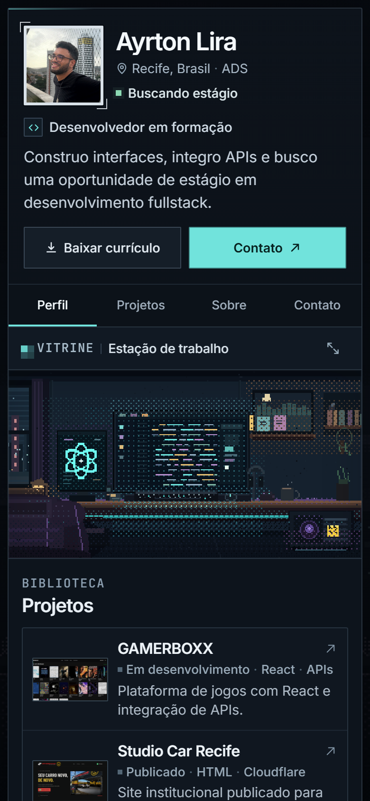
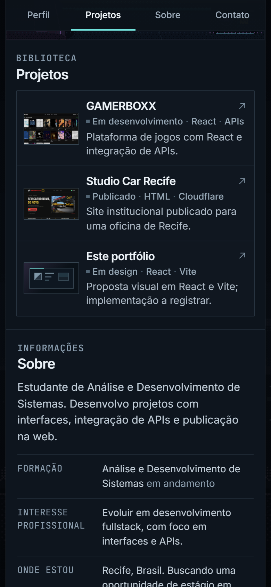
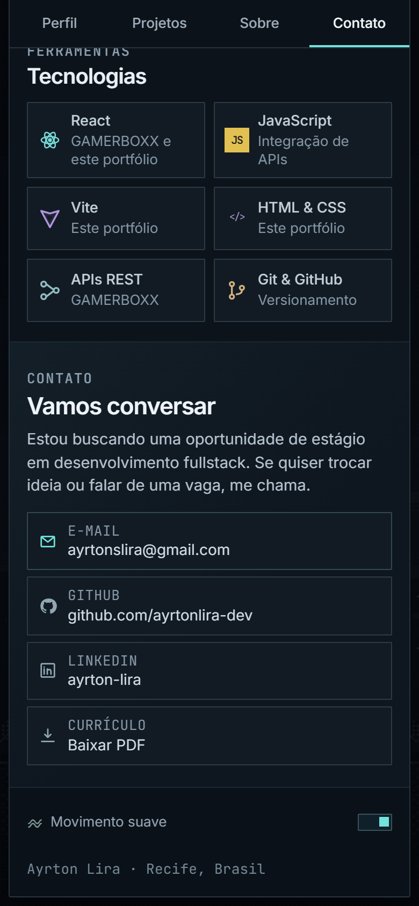

AYRTON LIRA / EXPERIÊNCIA MOBILE
PROPOSTA VISUAL · 2026
RESPONSIVO / UMA COLUNA
A mesma atmosfera,
A mesma atmosfera,
sem virar outro site.
O perfil deixa de ocupar o centro e passa a preencher uma coluna. A vitrine continua em destaque, os acessos laterais viram navegação fixa e a experiência de projeto abre em uma folha inteira.


